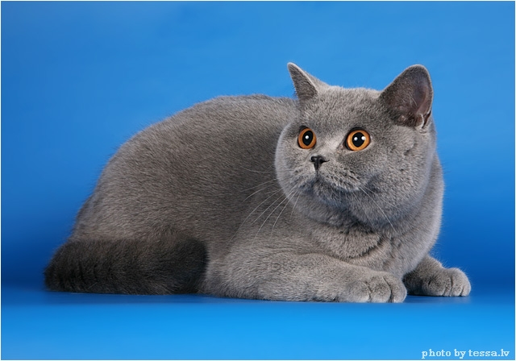

katės
Katės gyvūnai, augalai - Skelbiu.lt

X Dėl geresnės Skelbiu.lt paslaugų kokybės naudojame slapukus (angl. cookies).Naršydami toliau, patvirtinate, kad sutinkate su slapukais. Tai bet kada galėsite atšaukti, pakeisdami nustatymus. Skelbiu.lt slapukų politika . Lankomiausias
skelbimų portalas LT RU ( 0 ) Įsiminti skelbimai ( 0 ) Peržiūrėti skelbimai Paieškos ( 0 ) Prisijungti Registruotis Katės, Gyvūnai, augalai, Visi skelbimai (436) Gauti naujus skelbimus: Ekrane El. paštu + Įdėti skelbimą Įsiminti skelbimai (0) Skelbimų: 436 Atnaujinti viršuje Naujausi viršuje Atnaujinti viršuje Pigiausi viršuje Brangiausi viršuje
NEPRALEISKITE NAUJŲ SKELBIMŲ
Katės, Gyvūnai, augalai, Visi skelbimai
Gaukite naujus skelbimus į ekraną Gaukite naujusskelbimus el. paštu Vilnius, ... prieš 1 d. 1
Dovanojami kačiukai
Dovanojamos gražios 2,5 mėn. katytės. 3 rudai margos, pūkuotos ir 1 juoda baltu kakliuku, mažiau pūkuota. Katytės tvarkingai vaikšto į kraiko dėžę, ėda sausą ir šlapią kačių maistą. Vilniaus m. ir Vilniaus raj. mielai atvešime į sutartą vietą ir... Vilniaus r. prieš 2 d. 1Dovanojami 3,5 mėn. du mieli kačiukai
Dovanojami 3,5 mėn. du mieli kačiukai. Abu kačiukai augo ūkiniame pastate, tačiau nuo mažens buvo apsupti vaikų, todėl mielai būna ant rankų ir mėgsta žmonių kompaniją. Abu jie labai ramus ir mieli. Jie naudojasi kraiko dėžute mieliau nei... Kauno r. prieš 36 min.Dovanoju katytę.
Dovanoju pilnai socializuotą, namuose gimusią ir augančią trijų mėnesių amžiaus katytę. Sverianti apie 1,5 kg, skiepyta pilnu skiepų paketu, turinti skiepų kortelę, gavusi vaistų nuo kirminų. Lazdijų r., ... prieš 4 val.Gal kas padovanotų hipoalerginį katiną/katę?
Jau labai ilgai norėjome prisiimti katiną į namus, bet kadangi šeimoje yra žmogys alergiškas katėms, tai niekada neišėjo. Tad ieškome ir kreipiamės, tiktų betkoks hipoalerginis kačiukas, veislė nesvarbi, lytis irgi. 862091788 Kaunas prieš 6 val.Dovanojami kačiukai
Šie mieli penki maži kačiukai dairosi savo nuolatinių namų. Jie apie 2 mėn., nukirminti, glaudžiasi pas globėją Partizanų g., kuriai jau sunku juos prižiūrėti. Kaunas, tel.nr. pasiteiravimui: 8 614 83373 Dovanojama su Katino svajonės sutartimi... Marijampolė prieš 6 val.Dovanojama sterilizuota katytė
Katytė Paira ieško namų ir mylinčio žmogaus. Paira gimusi 2018m. gegužės mėn., tvarkingai naudojasi kačių tualetu, jau sterilizuota, paskiepyta kompleksine vakcina, tvarkingo kailiuko ir profilaktiškai nukirminta. Katytė ramaus būdo, draugiška,... Marijampolė prieš 6 val.Dovanojama jauna sterilizuota katytė
Katytė Savana jau dairosi namučių ir atsakingų šeimininkų. Mažylė gimusi 2020 m. balandžio pabaigoje, visiškai savarankiška, be galo tvarkinga, naudojasi dėžute su kraiku, švarutėlio kailiuko, profilaktiškai nukirminta ir jau sterilizuota bei... Marijampolė prieš 6 val.Kastruotas katinėlis ieško namų
Kažkada buvau susivėlęs laukinukas, tad teko pasigražinti kirpyklėlėje, kad dabar turėčiau žvilgantį ir tvarkingą kailiuką :-) Nerealus grožis ieško namų ! Katinėlis Dambis gimęs 2019 m. rugsėjo mėnesį, jau kastruotas nukirmintas ir paskiepytas... Marijampolė prieš 6 val.Kastruotas, čipuotas jaunas katinėlis ieško namų
Vos pusmetį po šią žemelę liuoksintis (gimęs 2020 m. balandžio mėnesį) pūkuotas angliukas Lėlys nusiteikęs draugystei su mylinčiu žmogumi ir ilgiems metams apsistoti jaukiuose namuose. Lėlys tam pilnai pasiruošęs : moka naudotis kačių tualetu... Marijampolė prieš 6 val.Dovanojama sterilizuota jauna katytė
Jaunutė katytė Vytė ieško namų. Vytė gimusi 2020 m. balandžio mėnesį, jau sterilizuota, paskiepyta kompleksine vakcina, profilaktiškai suduoti vaistukai nuo kailio ir vidaus parazitų, tvarkingai naudojasi dėžute su kraiku. Ji puikiai sutaria su... Reklama Marijampolė prieš 6 val.Pūkuota meilėnybė miau ieško namų -)
Mielas, linksmas ir žaismingas katiniukas Pikis ieško namučių ir mylinčių bei atsakingų šeimininkų ! Pikis dar visai jaunutis, gimęs 2020 m. birželio mėn., puikiai sutaria su kitomis draugiškomis katėmis bei mėgsta žmogaus kompaniją (Y) .... Šilalės r. prieš 8 val.Įvairių spalvų kačiukai
Trys berniukai ir viena juodos spalvos mergaitė, 4 men amziaus. Kačiukai yra draugiški, smalsūs, ramaus būdo. Reikalingi šeimininkai, kurie jais pasirūpintų ateityje. Valgo mėsytę, sausą kačiukų maistą. Kambaryje yra tvarkingi, daro į... Šilalės r. prieš 8 val.Rainiukai
Tai šaunūs kačiukai, energingi, mėgstantys žaisti ir draugauti. Trūksta tik šeimininkų, kurie jais pasirūpintų ateityje. Berniukas ir mergaitė *(nuotraukos apačioje yra parašyta kas yra). Kačiukai jau patys ėda, yra tvarkingi, kambaryje moka... Panevėžys prieš 9 val.Mieli kačiukai
Sveiki, gal kam reikia katinukų? Dovanoju . Liko viena katytė Pakruojo r., ... prieš 9 val.Dovanojami kačiukai!
Labai meilūs, draugiški, naudojasi kraiko dežute, 6 berniukai ir viena balta katytė. Kačiukai Pakruojyje, bet galime atvežti iki Šiaulių. Kačiukams 2 mėn. Klaipėda, ... prieš 9 val. Parduota per 2 d.Dovanoju katytę, persikinė katė
Persikinė katytė ieško namų rasta ir išgelbėta :) iš laukinukės per 1 dieną tapo naminė :) Žmogaus nebijo, mėgsta būti rankose, murkia :) Žaidžia po visus namus :) šuns taip pat nebijo ) Jeigu neturite transporto galėčiau net atvežti KLAIPĖDOJE... Kaunas, ... prieš 10 val.Laiminga seima
Si katyte po sodo namuko pagymde 3 puikus katinukus. Pensininku seima labai rupestingai, kiek gali, globoja katinukus ir labai pergyvena, kad rudeni jie isvaziuoja i miesta ir maziliai su katyte lieka lauke. Todel jeskame geru zmoniu ir gero... Kaunas, ... prieš 10 val.Katinas Arnoldas
Sis katinas gavo toki varda ne taip sau.Jis atsirado pas mus nezinia is kur ir atrode kaip tikras Arnoldas Swarcnegeris, dydelis, stiprus ir nieko ne bijantis. Isgasdino visus mano globotinius, katinukus laukinukus.Jauciasi kieme ir elgesi... Telšių r. prieš 10 val.Dovanojami 5-ių mėn. katinukai
Dovanojami trys mieli katinukai, gimę šių metų gegužės 16 dieną. Klaipėda prieš 11 val.Dovanojamas kačiukas
Dovanojamas apie 4 mėn.amžiaus kačiukas,patinėlis,laikinai priglaustas,rastas lauke.Nukirmintas,nublusintas,naudojasi kraiko dėžute.Kol kas dar prisibijo žmogaus,triukšmingos aplinkos.Ieško kantrių šeimininkų. Klaipėdos r. prieš 11 val.Dovanojama katytė
Dovanojama apie 3 mėn.amžiaus katytė labai atsakingiems žmonėms.Katytė rasta serganti lauke,išgydyta,suduoti vaistai nuo parazitų.Randasi laikinoje globoje.Ieškomi nuolatiniai šeimininkai,kurie toliau ją mylės ir atsakingai rūpinsis,laiku... Klaipėda, ... prieš 11 val.Dovanojama katytė
Rasta ir dovanojama labai meili jauna katytė.Labai prašo būti glostoma,nori žmogaus dėmesio.Tvarkingai naudojasi kraiko dėžute,sterilizuota. Kaunas prieš 1 d.Iškom namų
Ieškom namų gražuolei katytei Vilnius prieš 1 d.Dovanoju nuostabius kačiukus!
Sveiki. Dovanoju du nuostabius kačiukus! Sveiki ir energingi. ~2 mėn amžiaus. Mylintiems naujiems šeimininkams nemokamai pristatau Vilniuje ir aplink :) 1 2 3 4 5 6 Įsiminti skelbimai Įdėkite skelbimąPopuliarios paieškos:
kates vilnius
kates
kate vilnius
kaciukai vilnius
gyvunai
kate
dovanoja kates vilnius
kates kaunas
gyvunai vilnius
kaciukai siauliai
kates panevezys
kaciukai
kates klaipeda
kate kaunas
nuolaidos
Prisijunk ir rask savo įsimintus skelbimus visur – kompiuteryje, telefone, planšetėje ARBA Jungtis su Facebook Jungtis su Google Skelbiu.lt pagalba: +370 664 55727 Darbo laikas: I-V 08:20 - 17:00 Naudojimo taisyklės / D.U.K. Kontaktai Svetainės struktūra D I G I N E TPosted by Jack  Read more
Read more  Comments (15)
Comments (15)  2020.10.30 06:09
2020.10.30 06:09